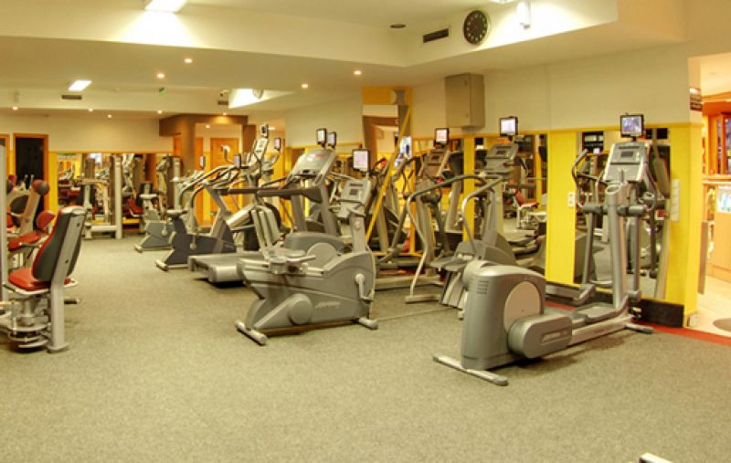

Órarendek 2019-20 / 1. félév
Összefüggő szakmai gyakorlat
Tájékoztató az összefüggő szakmai
gyakorlatról
Együttműködési megállapodás
Munkanapló
Tájékoztató a szeptemberben esti tanrendben induló képzéseinkről
Iskolánkban esti tanrend keretében szeptembertől Szoftverfejlesztő, illetve Fittness-wellness instruktor képzéseket indítunk.
A képzést megelőző BEIRATKOZÁS időpontja a következő:
Szoftverfejlesztő képzésre: 2019. 08. 22-én (csütörtökön) 15:00-18:00 óráig.
Fittness-wellness képzésre: 2019. 08. 23-án (pénteken) 15:00-18:00 óráig.
PÓTBEIRATKOZÁS:
2019. 08 29. (csütörtök) 15:00-18:00 óráig.
A beiratkozáshoz a következő iratokat kell magával hoznia:
- személyi igazolvány
- lakcímkártya
- TAJ- kártya
- Adókártya
- Érettségi bizonyítvány
- Szakképesítésről bizonyítvány (ha van)
- NEK adatlap diákigazolványhoz
- az e-mailben küldött tanulói adatlap pontosan kitöltve, aláírva
Tájékoztatjuk, hogy esti képzésben igényelhető diákigazolvány. Ehhez az Okmányirodában vagy a Kormányablaknál a jelentkezőnek NEK-es adatlapot kell igényelnie és a beiratkozáskor magával hoznia a diákigazolvánnyal kapcsolatos ügyintézés elindításához.
Ezt követően az Oktatási Hivatal által elkészített és megküldött diákigazolványról értesítést küldünk, melyet iskolánk titkárságán tud majd átvenni.
Az órarendet a beiratkozás után honlapunkon fogjuk közzátenni.
Felhívjuk figyelmét, hogy a képzést csak a beiratkozást követően kezdheti meg!
A beiratkozással, képzéssel kapcsolatos egyéb kérdéseket +36 70 399 6736 telefonszámon vagy pedig a macskasi.szilvia@bkszc.hu e-mail címen tehetik fel augusztus 12-től.
Utólagos jelentkezést szeptember 13-ig tudunk elfogadni!
Szoftverfejlesztő képzés
A programozás és a webfejlesztés során a következő témákat tanítjuk:
Greenfoot, Java, JavaFX, JDBC, HMTL, CSS, JavaScript, Bootstrap, PHP, MySQL, Git/GitHub.
Részletes ismertető az Iskolánk lapon található.
Fitness-wellness instruktor képzés
Az első félév inkább elméleti jellegű, a második félévtől vannak a mozgással járó gyakorlatok (edzésprogramok, gimnasztika, csoportos fitness órák (iskolánk tornatermeiben), aquatréning (a Park uszodában), fitness termi kndicionálás (a Nemes Fitness teremben). A képzés színvonalát külsős oktatók is emelik.
Részletes ismertető az Iskolánk lapon található.